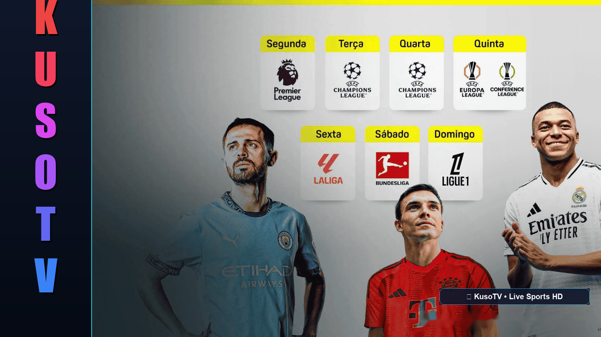

Kuso
TV
dark themes

Klik salah satu pertandingan di bawah untuk menonton siaran
Memutar Siaran Live
Pertandingan besok
Pertandingan hari ini
Pertandingan kemarin
Jadwal pertandingan
Memuat jadwal pertandingan...